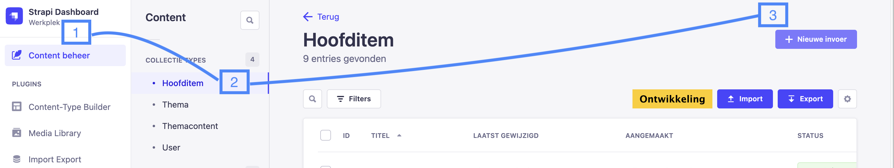
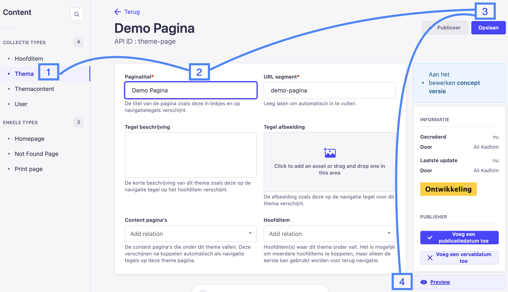
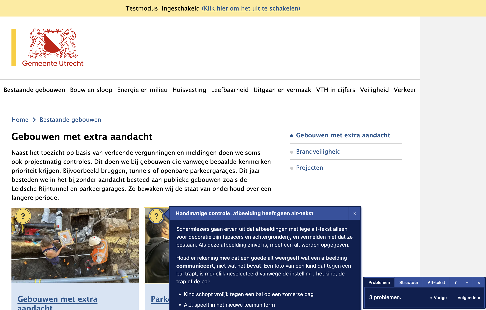
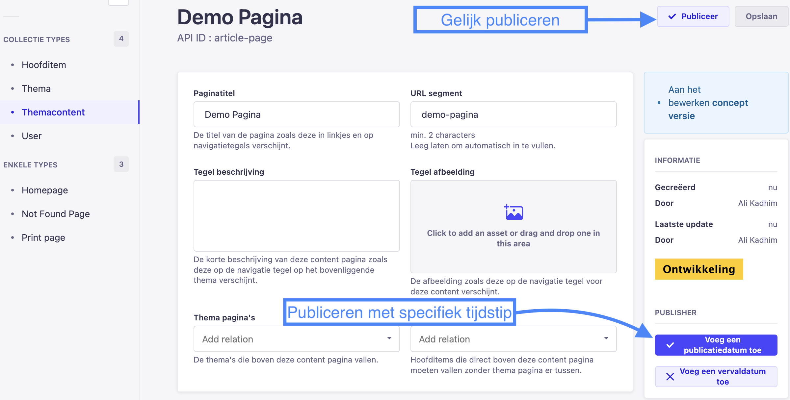

Handleiding voor het gebruik van het Strapi-dashboard
Hoe u inhoud kunt toevoegen of bijwerken
-
Open het Content Beheer:
- Klik op de knop "Content Beheer" aan de linkerkant.
- Er verschijnt een navigatiebalk aan de zijkant met alle inhoud.
-
Selecteer een collectie:
- Kies een van de content collecties om inhoud toe te voegen of te wijzigen.
- Klik op de knop "Nieuwe invoer" om iets nieuws toe te voegen.

-
Voorvertoning en Publicatie:
-
Klik op de "Opslaan" knop rechtsboven om je wijzigingen op te slaan.
-
Klik vervolgens op de "Preview" knop onder het "Informatie" blok aan de rechterkant om een voorvertoning van de pagina te bekijken.
-
De voorvertoningsmodus toont de pagina alleen voor jou en is niet zichtbaar voor anderen.

-
Gebruik de Editoria11y tool in de voorvertoningsmodus voor toegankelijkheids- en HTML-validatie. 
-
-
Pagina's publiceren:
-
Gebruik de "Publisher" functie om een nieuwe pagina op een specifiek tijdstip te publiceren of te de-publiceren.

-
Content beschrijven
Collectie Types
Hoofditem wordt op de volgende plekken getoond:
- Elk hoofditem heeft een link de hoofdnavigatie.
- Elk hoofditem wordt getoond als kaart op de homepage.
-
Elk hoofditem heeft een eigen pagina, bijvoorbeeld op:
https://vth-programma-verslag.digitaal.utrecht.nl/nl/verkeer.
Thema wordt op de volgende plekken getoond:
- Elk thema wordt getoond als kaart op de pagina van het hoofditem waarbij die hoort.
-
Elk thema heeft een eigen pagina, bijvoorbeeld op de URL:
http://vth-programma-verslag.digitaal.utrecht.nl/nl/theme/horeca.
Themacontent zijn de pagina's met een uitgebreide teksten. Ze worden op de volgende plekken getoond:
- Alle themacontent wordt getoond als kaart op de pagina van het hoofditem of thema waar ze gekoppeld zijn.
-
Alle themacontent heeft een eigen pagina, bijvoorbeeld op de URL:
https://vth-programma-verslag.digitaal.utrecht.nl/nl/article/slopen
Enkele Types
- Homepage: De startpagina van de website.
- Not Found Page: Toont tekst wanneer een gebruiker een niet-bestaande pagina probeert te bereiken.
- Print Page: Voor het afdrukken of downloaden van de volledige website-inhoud.
Media Library
- Voor het beheren van afbeeldingen.
Tekst Editor
Je kunt kiezen uit de volgende opties voor tekstopmaak:
- Alinea: een alinea met tekst
- Lead: inleidende tekst
- Kop 1 tot en met Kop 6: koppen van de tekst.
- Vet: extra belangrijke tekst kun je vet maken. Je moet nooit een hele alinea vet maken, gebruik vet alleen voor een korte zin of een gedeelte van de tekst.
- Opsommingslijst: voor een lijst met meerdere items.
- Genummerde lijst: een lijst met items in een specifieke volgorde.
- Blokcitaat: als je een tekst of een uitspraak wilt citeren.
- Hyperlink: maak een link naar een andere pagina.
- Afbeelding: voeg een afbeelding toe. Let op dat je altijd een "Alternatieve tekst" invult, zodat mensen die de afbeelding niet kunnen zien wel weten wat er afgebeeld is.
-
Tabellen:
- Tabel met bijschrift invoegen: tabellen geef je op deze manier een titel.
- Tabel invoegen: hier kun je tabellen zonder titel maken.
- YouTube-video: kopieer eerst de URL van een YouTube-video, en plak die daarna hier in het invoerveld.
- Scheidingslijn: gebruik een horizontale lijn om een tekst in twee onderdelen op te splitsen, wanneer je geen Kop kan gebruiken.
- Genereer ID voor kop: wanneer je een link naar een kop in deze tekst wil maken, moet je eerst een ID voor de kop maken. Plaats de cursor in een kop, en klik op de knop "Genereer ID voor kop". De link naar de kop wordt automatisch gekopieerd, zodat je de link kan plakken in het "URL" veld van een link.
Werken met tabellen:
- Plaats de tekstcursor in een tabel, dan verschijnt het Tabel menu.